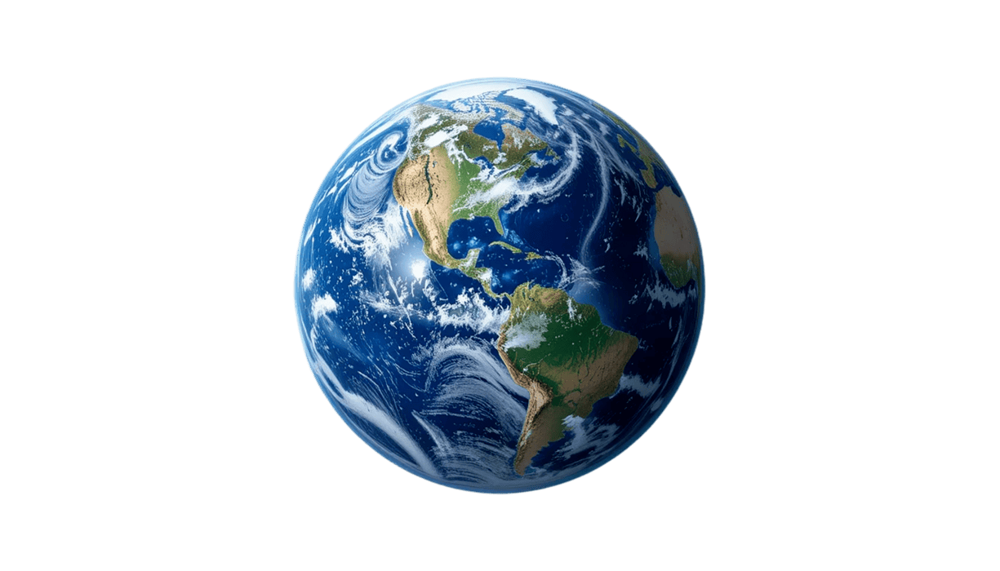

Земята е третата планета от Слънцето и единствената известна планета, която поддържа живот. Тя има атмосфера, съставена предимно от азот и кислород, което я прави подходяща за дишане от живите организми.
Земята има един естествен спътник - Луната, която влияе на приливите и отливите в океаните. Планетата обикаля около Слънцето за около 365.25 дни, което определя продължителността на годината.
Повърхността на Земята е разнообразна, с континенти, океани, планини и равнини. Тя е дом на милиони видове растения и животни, както и на човешката цивилизация.
| Характеристика | Стойност |
|---|---|
| Диаметър | 12,742 км |
| Маса | 5.97 x 10^24 кг |
| Орбитален период | 365.25 дни |
| Спътник | Луна |